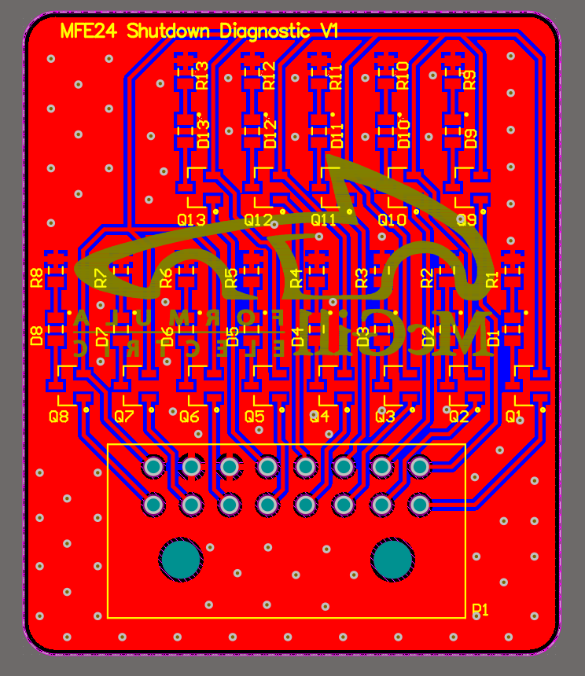

SELECTED WORK
Engineering Projects
A selection of projects spanning hardware design, PCB development, analog and digital electronics, embedded systems, robotics, and FPGA design.

MIXED SIGNAL HARDWARE
Multichannel Scintillation Detector Using Silicon Photomultipliers (SiPM)
Cost-efficient radiation detection system featuring analog signal processing, power management, PCB design, and embedded data acquisition.
EMBEDDED HARDWARE
Custom ESP32-S3 MP3 Player
Custom embedded audio system integrating USB-C, LiPo power management, microSD storage, audio processing, and a user interface.

AUTOMOTIVE HARDWARE
Formula Electric Shutdown Loop
Diagnostic PCB designed to monitor 13 critical vehicle systems and simplify electrical fault identification.

ROBOTICS & CONTROL
Dynamic Controller for a Robotic Manipulator Arm
Dynamically controlled inverse-dynamic system developed in ROS and Gazebo with joint-space, task-space, stiffness, and damping control.

ANALOG ELECTRONICS
BJT-Based Operational Amplifier
Discrete operational amplifier designed and simulated using multiple BJT amplifier stages, including differential, buffer, and Class AB output stages.

DIGITAL HARDWARE
FPGA Binary Sequence Counter
VHDL-based Moore FSM design implemented on an Altera DE1-SoC FPGA to detect and count specific 4-bit input sequences.
EMBEDDED SYSTEMS
Bluetooth Remote-Controlled Car
Arduino-based robotic platform upgraded with Bluetooth control and a custom handheld controller using a joystick and pushbuttons.
ABOUT
EE focused on hardware.
Electrical Hardware Designer with experience developing mixed-signal embedded systems for medical, aerospace, and automotive applications. Skilled in Altium Designer, PCB design, hardware validation, FPGA development, and system integration.
Experienced taking hardware from concept through prototyping, debugging, and validation.